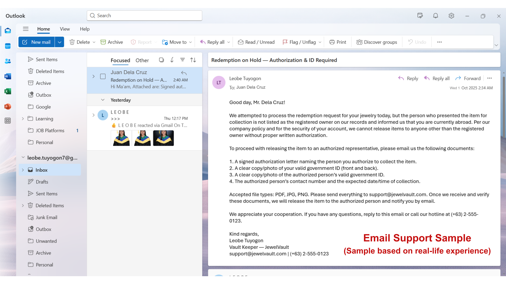
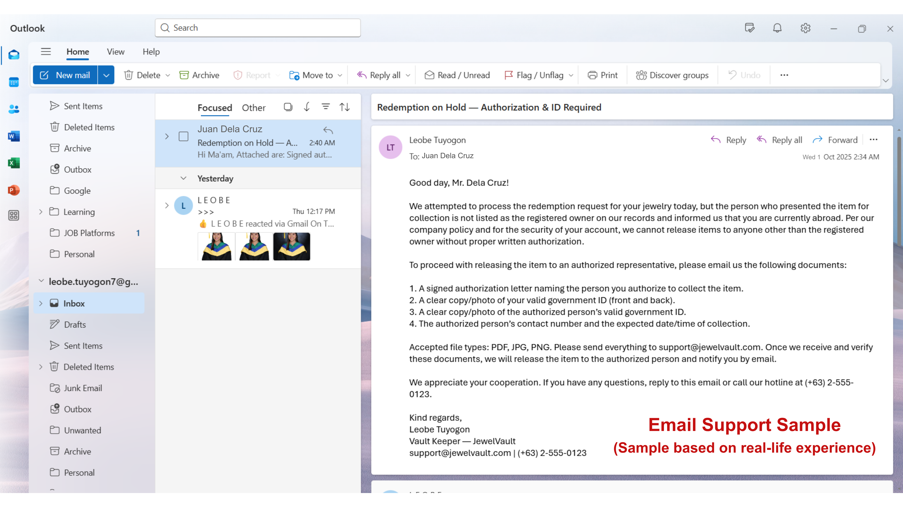
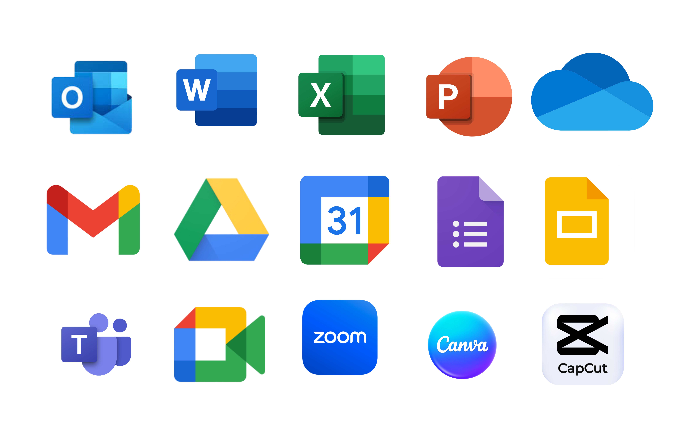

About Me
Hi, I’m Leobe! I’m an aspiring Virtual Assistant with three years of experience in administrative support, where I strengthened my skills in organization, accuracy, and attention to detail.
I’m now bringing those strengths into the online space by offering Admin Tasks, Customer Support, and E-Commerce Assistance. I may be a beginner in the VA industry, but I am reliable, detail-oriented, and eager to learn new systems quickly.
My goal is to help business owners save time, stay organized, and focus on growing their business through reliable and efficient support.
View My Resume
Skills & Expertise
üìä
Administrative Support
- Data entry & file organization
- Email & calendar management
- Document formatting
- Online research
üë©‚Äçüíª
Customer Support
- Email & chat handling
- Order updates & client concerns
- Writing clear and professional responses
üõí
E-Commerce Assistance
- Product listing & updates
- Order processing & tracking
- Inventory monitoring
- Basic online store support
üí™
Core Strengths
- Reliable & trustworthy
- Strong attention to detail and accuracy
- Organized and efficient time management
- Quick learner & adaptable to new systems
Portfolio Samples
Admin Support | Data Entry | Email Management

The Challenge:
In my previous role in a warehouse setting, I handled delivery tracking and communications manually, which sometimes led to missed updates, unclear records, and delays in addressing stock shortages or customer follow-ups.
What I Did:
- Created a structured spreadsheet with columns for delivery status, dates, branch names, PO/Invoice/DR numbers, and remarks.
- Used checkboxes to visually indicate delivery and return status.
- Organized a professional inbox using Microsoft Outlook, with folders for Clients, Finance, Training, and Projects.
The Result:
The system made it easier to:
- Monitor delivery progress and return status at a glance.
- Transformed a cluttered inbox into a structured workspace, making communication more efficient and task management easier.
- Strengthened overall workflow by combining logistical tracking with organized digital communication.
Customer Service (In-Person Experience)
 

The Challenge:
Supporting customers directly meant handling questions, complaints, and requests in real time—often without scripts. I had to stay calm, listen actively, and resolve issues on the spot.
What I Did:
- Assisted walk-in customers with inquiries, purchases, and service concerns.
- Handled complaints professionally, offering solutions and follow-ups.
- Maintained a friendly, helpful attitude to ensure a positive customer experience.
The Result:
- Built strong rapport with customers, leading to repeat visits and positive feedback.
E-commerce Assistance
In my previous role as a vault keeper, I managed jewelry sales and inventory, tracked outbound and inbound inventory flow, and assisted with in-person customer service. I maintained accurate records, ensured product security, and supported purchases with professionalism and care. These responsibilities translate directly into e-commerce tasks such as inventory tracking, product listing management, and customer support.
Creative Add-ons: Graphic Design & Video Editing


This 15-second highlight is part of a 2-minute school project where I acted as videographer, director, and editor. I handled the filming, creative direction, and editing, experimenting with transitions, text overlays, and simple effects. While I’m not an expert yet, this sample reflects my growing interest and hands-on experience in videography and video editing.
The Challenge:
Creating visuals for small businesses, as well as short videos for school projects.
What I Did:
- Personally designed each logo from scratch, tailoring the style to match the business’s identity.
- Collaborated closely with business owners to ensure each creative output matched their goals and audience.
- I used Canva and CapCut to design logos, social media graphics, and short school project videos.
The Result:
Enhanced my creative workflow through direct collaboration, iterative feedback, and practical application across digital and social media.
Tools I am Proficient In
I am proficient in the tools shown and open to learning new systems. I’m a fast learner and confident in my ability to quickly adapt to any platform or tool required.
About Me
I'm a passionate and detail-oriented Virtual Assistant with a strong foundation in admin support, customer service, and e-commerce assistance. I love helping businesses run smoothly and thrive by taking care of the behind-the-scenes tasks that matter.
My VA Journey
I started my VA journey with curiosity and the desire to learn something new.
My journey began when I discovered how virtual assistants can help businesses stay organized and productive from anywhere. That inspired me to start learning tools like Google Workspace, Excel, and to explore how I can apply my skills to support clients online.
I continuously invest in my learning through free online trainings and YouTube resources about virtual assistance. These have helped me understand the tools, systems, and mindset needed to succeed as a VA.
As I continue to build my experience, I’m committed to applying what I’ve learned with focus, creativity, and attention to detail. I believe that consistency and a willingness to learn are the keys to achieving great results over time.
Today I’m bringing my growing skills into the online space through admin support, customer support, e-commerce assistance, basic graphic design, and video editing. Every small project is a chance to improve, and every challenge is an opportunity to learn something new.
Education
Professional Work Experience
- Stock/Vault Custodian | Villarica Pawnshop, Inc. – Quezon City (2023–2025)
- – Safeguarded and organized sensitive assets, controlling access to the vault and preventing loss or theft.
- – Maintained accurate inventory records and conducted regular physical counts to ensure stock levels matched system data.
- – Implemented efficient filing and labeling systems for quick retrieval and easy monitoring of supplies.
- – Followed strict security and safety protocols, demonstrating reliability and attention to detail.
Fun Facts About Me
- Here’s a glimpse of who I am beyond work:
- üåø I‚Äôm more of a ‚Äúquiet achiever‚Äù type. Focused, but with a little bit of humor.
- ☕ Exploring nature and transforming calm moments into photo and video edits is my kind of relaxation.
- üé® I can spend hours designing and it still doesn‚Äôt feel like work.
- ✈️ I believe growth begins outside your comfort zone.
“I started with curiosity, now I create with purpose.”
Need reliable support? I'm here to help.